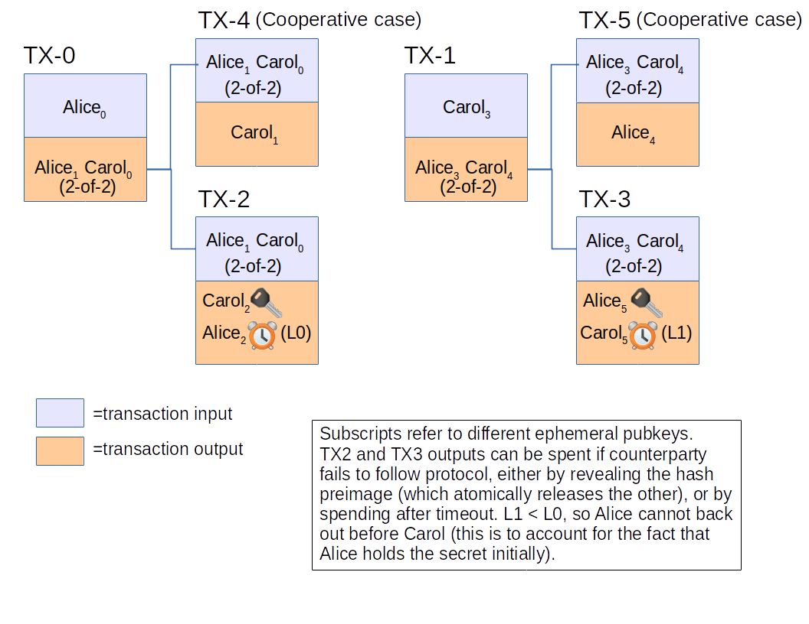
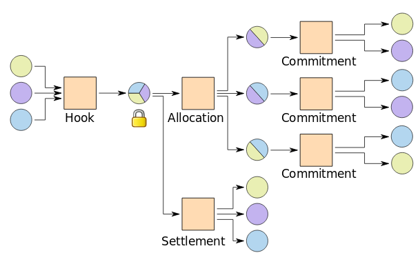

Introduction
Current version of Bitcoin, allows later transaction to be written that spends an earlier transaction, even if the earlier transaction has no signatures yet. This feature allows a general pattern for various protocols, the Funding Transaction pattern, which provides private enforcement of contracts out-of-chain, with the only visible onchain presence being a SegWit N-of-N multisignature address being spent to one or more standard addresses.
Study of various protocols suggests that this technique is general, and can be used to enforce any contract expressible in Bitcoin SCRIPT in a private and offchain manner.
The Funding Transaction Pattern
The Funding Transaction pattern solves problems like:
- Protocols that require non-standard SCRIPT programs reduce the anonymity set of their users.
- Blockchain space is expensive in general.
The Funding Transaction pattern describes how to solve such problems:
- The complicated SCRIPT programs needed by a protocol are kept offchain, and are rooted from a specific transaction output that requires signoff of all protocol participants (a standard N-of-N multisignature output). Only this transaction, the funding transaction, is confirmed onchain at the end of the protocol setup stage.
- Successful completion of the protocol leads to the creation of a simple spend, of the multisignature N-of-N output directly to standard addresses for each participant that should receive funds based on the protocol. This increases privacy and reduces cost.
- Protocol setup requires that all offchain transactions be completely written and signed before the funding transaction is signed and confirmed on the blockchain. This ensures that application of the offchain transactions is atomic.
- Stalls in the protocol are recoverable by enforcing the protocol rules using the non-standard SCRIPT programs, at some loss in privacy and increased cost due to the appearance of non-standard outputs onchain.
The Funding Transaction on Lightning
In the Lightning Network protocol, channels are opened by the confirmation of a funding transaction. This is a transaction with a "funding output", which is a simple payment to a 2-of-2 multisignature P2WSH address.
The protocol for opening a channel involves creating the funding transaction, then creating and signing the initial commitment transactions, and finally signing and broadcasting the funding transaction. This order of steps ensures that there is no need for trust to open channels: by the time the funding transaction can be validly broadcast on the base Bitcoin blockchain network, a way for either side to back out of the channel without cooperation from the other already exists, in case one side or the other stalls within the protocol.
Lightning also supports a bilateral close: in this case, both sides coordinate to create a closing transaction. This is a simple transaction that spends the funding output and splits it up according to the final channel state agreed upon by both side of the channel. It looks like a spend of a 2-of-2 multisignature address to one or two pay-to-witness-public-key-hash addresses. Since a commitment transaction exists that either side can push on the blockchain, there is no incentive for the other side to refuse to create and sign the closing transaction. There is also an incentive to cooperate: if the protocol is completed, the onchain transaction looks no different from an ordinary spend of a 2-of-2 multisignature address to one or more pay-to-witness-public-key-hash addresses.
While participants on the Lightning Network will be informed of opening and closing of channels, non-participants, as well as monitors that start monitoring the Lightning Network after the channel has closed, will not be able to differentiate the historical participation in the Lightning Network from many onchain transactions. This also forces those performing analysis on Bitcoin transfers to store the data acquired from Lightning Network for themselves as early as possible, in contrast with blockchain analysis where historical data is widely available on every Bitcoin fullnode, with analyzers not needing to store the historical data themselves.
The Funding Transaction in CoinSwapCS
The CoinSwap protocol used in CoinSwapCS is described in this PDF file. Below is a graphic from that PDF file.
Of particular note is that the CoinSwapCS protocol has many similarities to the pattern as the transactions of Lightning Network:
- The TX-2 (spending TX-0) and TX-3 (spending TX-1) transactions must be written and signed, before the transaction they are spending (TX-0 and TX-1 respectively) is broadcast and confirmed.
- The TX-2 and TX-3 transactions are kept offchain (not broadcasted on the Bitoin network) until the protocol terminates.
- The existence of TX-2 and TX-3 allows a measure of trustlessness: in case one side stalls, the TX-2 or TX-3 transaction can be broadcast and spent to recover funds.
- The cooperative case TX-4 and TX-5 transactions are broadcast on the blockchain on normal conclusion of the protocol.
Thus in CoinSwapCS, TX-0 and TX-1 serve the role of funding transaction. Like in Lightning, there are transactions (TX-2 and TX-3) which enforce adherence to the protocol, but in usual operation are not broadcast over the network. Finally, in usual operation, simple transactions (TX-4 and TX-5) paying out directly to the destination are written in order to complete the protocol.
CoinSwapCS moves the enforcement contracts offchain for a privacy boost, since swaps become linkable if the enforcement contracts are revealed and spent.
The Funding Transaction in Burchert-Decker-Wattenhofer Channel Factories
In a paper released in 2017, Burchert, Decker, and Wattenhofer present the concept of channel factories. Channel factories are composed of at least three participants, who aggregate their funds together into a hook transaction, and then form channels between them using the aggregated funds in an allocation transaction. Channels may then be implemented using existing payment channel protocols, such as Poon-Dryja channels used by Lightning. The entire channel factory can be closed cooperatively by all participants using a settlement transaction. Below is an example image from the paper; circles are transaction outputs, circle color indicates required signatory to spend, with multicolor circles requiring an N-of-N signature:
Hook transactions follow the same pattern of funding transactions in Lightning and CoinSwapCS protocols: they pay out to an N-of-N multisignature, offchain transactions ensure correct adherence to the protocol, and in normal operation, termination of the protocol creates a simple transaction that spends directly to standard addresses owned by the participants. The above graphic looks suggestively similar to the CoinSwapCS graphic, with TX-0 being replaced with the hook transaction, TX-2 being replaced with the allocation transaction and the commitment transactions, and TX-4 being replaced with the settlement transaction.
Requirements on the Blockchain
In order to use the Funding Transaction pattern, at the minimum transaction malleability in all forms must be eliminated. This is sufficient for protocols where the funding transaction is funded by only one participant in the protocol, such as in CoinSwapCS and in the current version 1.0 of the Lightning BOLT specifications. A malleability fix is needed since there are offchain transactions that would get invalidated if a transaction is malleated, preventing enforcement of the protocol.
For protocols where the funding transaction is funded by multiple participants, a more stringent requirement is needed: the ability to refer to transactions before they are signed, with the signed version having the same transaction ID as the unsigned version. These protocols include the Burchert-Decker-Wattenhofer channel factories, as well as future versions of Lightning that will allow channels to be started with funding from both sides of the channel. Such protocols require that signing the funding transaction be the final step in protocol setup, with the successful confirmation of the funding transaction initiating the rest of the protocol.
Features such as SegWit, FlexTrans, or BIP140 provide the latter feature, in addition to a malleability fix. Thus in general one of those features should be preferred in order to allow general use of the Funding Transaction pattern.
Conclusion
The Funding Transaction pattern allows the enforcement of a contract supported by the blockchain while providing privacy by not actually exposing the contracts onchain in the normal case. It also generally has the side effect of requiring only a sequence of two transactions onchain in the cooperative case.